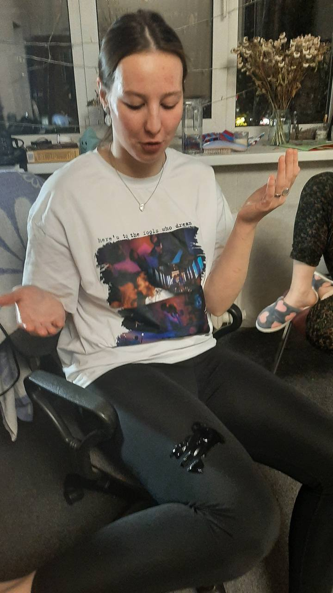
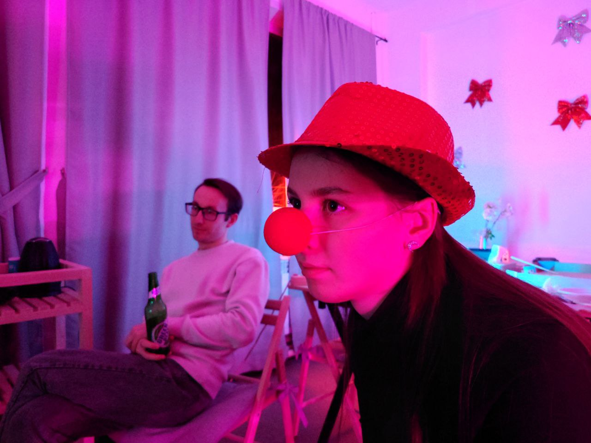
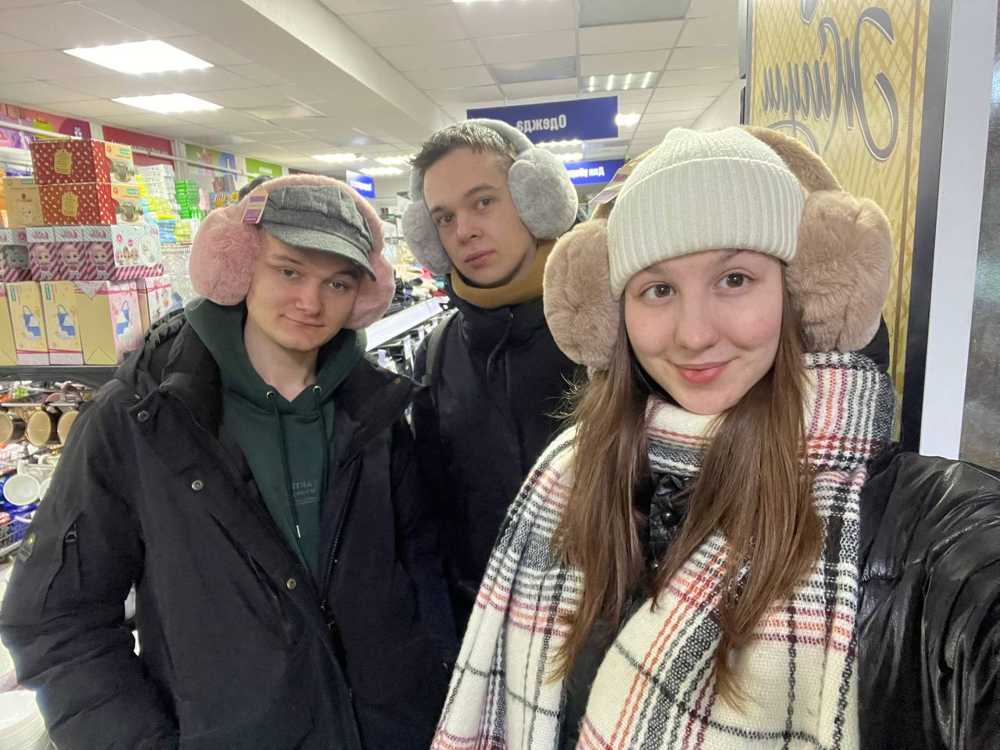
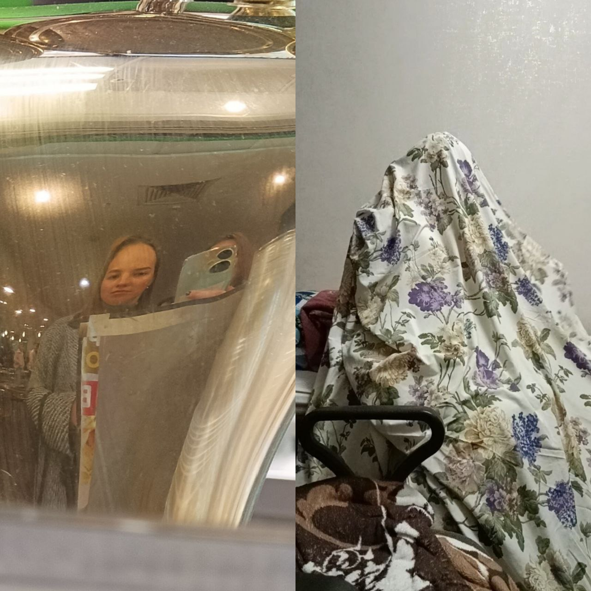
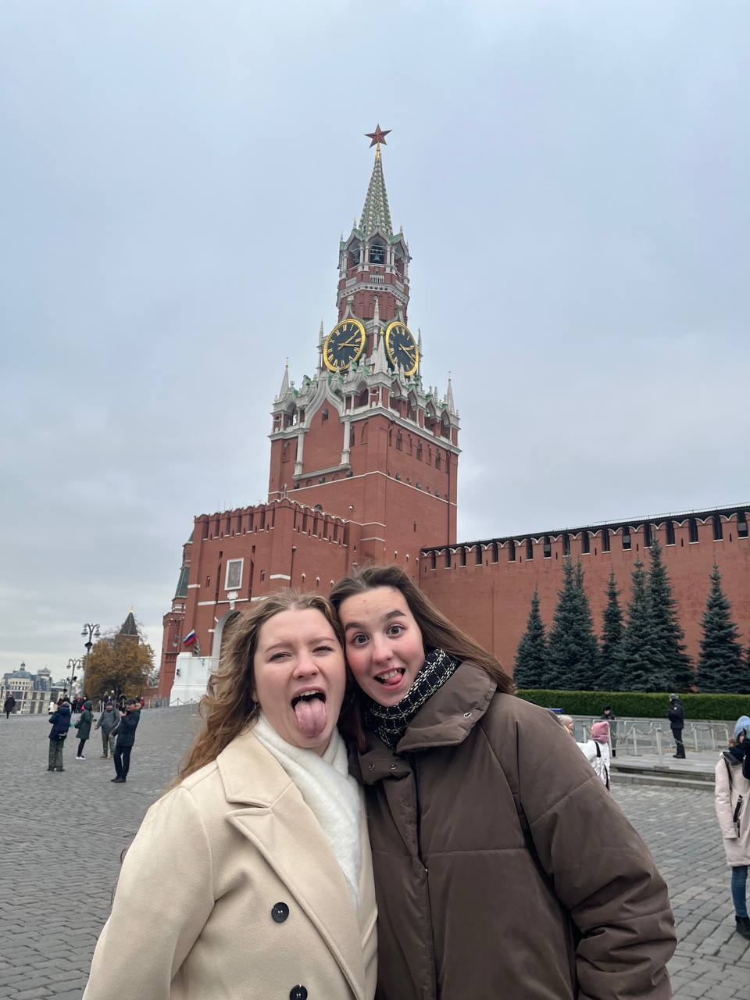
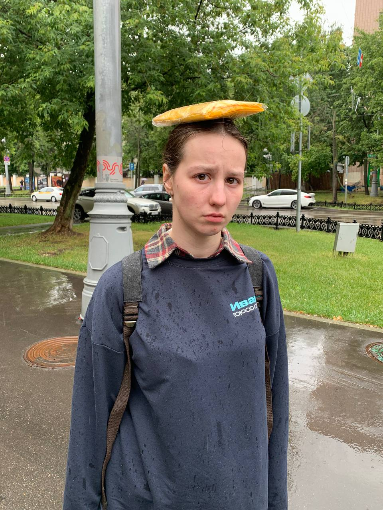
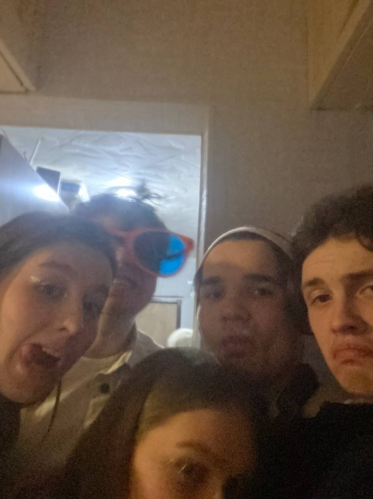
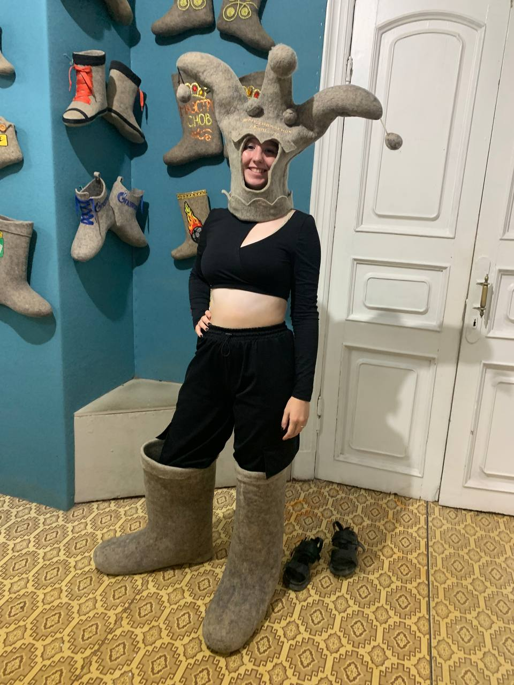
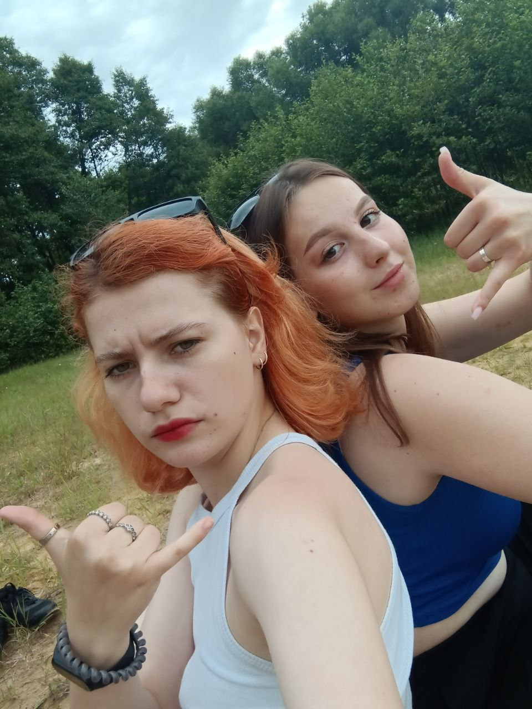

Воспоминаний у меня с Соней много...

Соня, подруга, теперь уже коллега по цеху...

За время общения я понял, что она...

Творческая. Эмоциональная. Добрая...

наша первая совместная поездка с Соней в Москву...


Соня мега крутая и ультра отвязная девчонка...

Иваново. Палех. Кинешма...

я помню, как Соня покорила меня еще на первом курсе...
×